살을 빼고 수술하면 결과가 더 좋을까요?
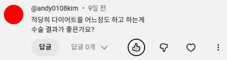
촬영 포인트 감량을 먼저 권하는 상황, 수술 전 목표 체중과 유지 기간을 질문합니다.

댓글 원문 · 영상 정보
적당히 다이어트를 어느정도 하고 하는게 수술 결과가 좋은가요?
@andy0108kim · 9일 전
유선형 체형 여유증 환자 ㅣ 여유증 수술 리뷰
닥터 황의 인성수업 · 실제 댓글 19개
감량·진단 → 수술 → 회복·재수술 질문을 촬영용으로 정리했습니다.
2026.10.21 확인 · 최근~약 5개월 전 게시 댓글 중 선별
제목은 질문 요약, 답변 대신 원장님께 여쭐 촬영 포인트입니다.
아래 이미지는 프로필을 바꾸지 않은 실제 댓글 캡처입니다. 테마·내용 변경은 상단 편집기에서 별도 이미지로 만들 수 있습니다.

촬영 포인트 감량을 먼저 권하는 상황, 수술 전 목표 체중과 유지 기간을 질문합니다.
적당히 다이어트를 어느정도 하고 하는게 수술 결과가 좋은가요?
@andy0108kim · 9일 전
유선형 체형 여유증 환자 ㅣ 여유증 수술 리뷰
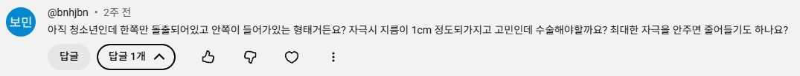
촬영 포인트 유두 모양과 유선 발달의 차이, 성장 중 관찰과 진료 기준을 묻습니다.
아직 청소년인데 한쪽만 돌출되어있고 안쪽이 들어가있는 형태거든요? 자극시 지름이 1cm 정도되가지고 고민인데 수술해야할까요? 최대한 자극을 안주면 줄어들기도 하나요?
@bnhjbn · 2주 전
정상적인 유두 크기는 얼마일까? (Feat. 전문의에게 물어봄) #여유증 #남자 #여자
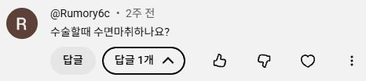
촬영 포인트 실제 병원의 마취 방식과 수술 전 준비 사항을 설명할 질문입니다.
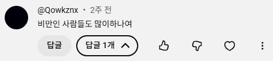
촬영 포인트 비만 환자의 상담 기준, 감량과 수술의 순서를 묻습니다.
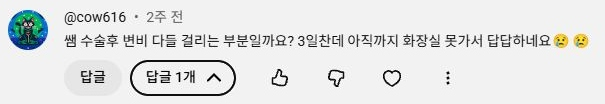
촬영 포인트 수술 후 배변 불편과 병원에 연락할 기준을 묻습니다.
쌤 수술후 변비 다들 걸리는 부분일까요? 3일찬데 아직까지 화장실 못가서 답답하네요
@cow616 · 2주 전
여유증 수술 직후부터 완전 회복까지 과정 설명
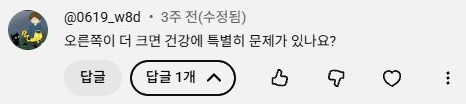
촬영 포인트 좌우 차이를 어떻게 평가하고 어떤 변화가 있으면 진료가 필요한지 묻습니다.
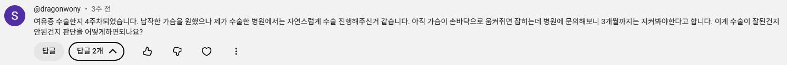
촬영 포인트 부기와 남은 볼륨의 구분, 수술 목표와 최종 결과 확인 시점을 묻습니다.
여유증 수술한지 4주차되었습니다. 납작한 가슴을 원했으나 제가 수술한 병원에서는 자연스럽게 수술 진행해주신거 같습니다. 아직 가슴이 손바닥으로 움켜쥐면 잡히는데 병원에 문의해보니 3개월까지는 지켜봐야한다고 합니다. 이게 수술이 잘된건지 안된건지 판단을 어떻게하면되나요?
@dragonwony · 3주 전
유선형 체형 여유증 환자 ㅣ 여유증 수술 리뷰
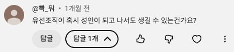
촬영 포인트 성인에게 새로 생긴 가슴 변화의 평가와 상담 시 확인할 정보를 묻습니다.
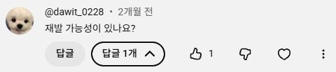
촬영 포인트 재발과 체형 변화의 구분, 추적 관찰 시 확인할 내용을 묻습니다.
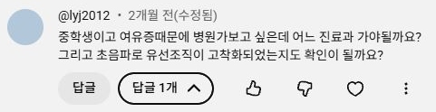
촬영 포인트 진료 시작 방법과 초음파로 확인할 수 있는 범위에 관한 질문입니다.
중학생이고 여유증때문에 병원가보고 싶은데 어느 진료과 가야될까요? 그리고 초음파로 유선조직이 고착화되었는지도 확인이 될까요?
@lyj2012 · 2개월 전(수정됨)
아래로 쏠린 가슴 라인, 여유증 수술로 달라졌습니다 ㅣ 여유증 수술 리뷰
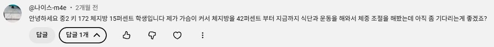
촬영 포인트 성장기 체형 변화와 수술 시기를 판단할 때 무엇을 보는지 묻습니다.
안녕하세요 중2 키 172 체지방 15퍼센트 학생입니다 제가 가슴이 커서 체지방을 42퍼센트 부터 지금까지 식단과 운동을 해와서 체중 조절을 해봤는데 아직 좀 기다리는게 좋겠죠?
@나이스-m4e · 2개월 전
청소년 여유증, 지금 수술해야하나요?
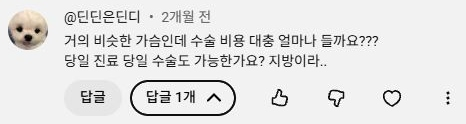
촬영 포인트 비용을 결정하는 항목과 당일 진행 여부, 사전 준비와 내원 횟수를 묻습니다.
거의 비슷한 가슴인데 수술 비용 대충 얼마나 들까요??? 당일 진료 당일 수술도 가능한가요? 지방이라..
@딘딘은딘디 · 2개월 전
평생 보정 속옷 입어서 여자들 브라 벗는 기분을 이해하는 남자의 가슴 수술 이야기
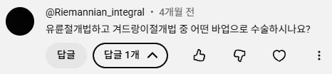
촬영 포인트 절개 위치 선택 기준과 각 방법의 장단점을 비교할 질문입니다.
유륜절개법하고 겨드랑이절개법 중 어떤 바업으로 수술하시나요?
@Riemannian_integral · 4개월 전
유선형 체형 여유증 환자 ㅣ 여유증 수술 리뷰
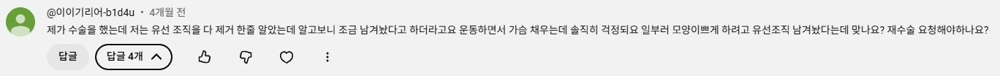
촬영 포인트 조직을 남기는 수술 설계와 과소 제거를 어떻게 구분하는지 묻습니다.
제가 수술을 했는데 저는 유선 조직을 다 제거 한줄 알았는데 알고보니 조금 남겨놨다고 하더라고요 운동하면서 가슴 채우는데 솔직히 걱정되요 일부러 모양이쁘게 하려고 유선조직 남겨놨다는데 맞나요? 재수술 요청해야하나요?
@이이기리어-b1d4u · 4개월 전
여유증 수술 2,30대에 하면 더 좋은 이유
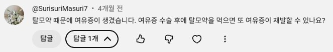
촬영 포인트 복용 약과 수술 후 변화의 관계, 처방의와 상의할 내용을 묻습니다.
탈모약 때문에 여유증이 생겼습니다. 여유증 수술 후에 탈모약을 먹으면 또 여유증이 재발할 수 있나요?
@SurisuriMasuri7 · 4개월 전
아래로 쏠린 가슴 라인, 여유증 수술로 달라졌습니다 ㅣ 여유증 수술 리뷰
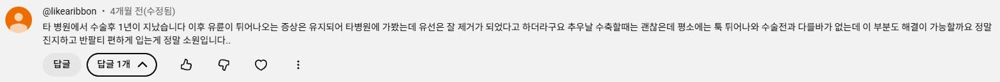
촬영 포인트 유선 제거 후에도 남은 돌출을 평가하는 과정과 교정 상담을 묻습니다.
타 병원에서 수술후 1년이 지났습니다 이후 유륜이 튀어나오는 증상은 유지되어 타병원에 가봤는데 유선은 잘 제거가 되었다고 하더라구요 추우날 수축할때는 괜찮은데 평소에는 툭 튀어나와 수술전과 다를바가 없는데 이 부분도 해결이 가능할까요 정말 진지하고 반팔티 편하게 입는게 정말 소원입니다..
@likearibbon · 4개월 전(수정됨)
여유증에 관한 모든 것, 전부 답해드립니다! #여유증 #여유증수술 #여유증수술후기
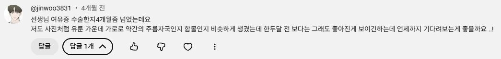
촬영 포인트 시간에 따라 좋아지는 변화와 진찰로 확인해야 할 변화를 묻습니다.
선생님 여유증 수술한지4개월좀 넘었는데요 저도 사진처럼 유룬 가운데 가로로 약간의 주름자국인지 함몰인지 비슷하게 생겼는데 한두달 전 보다는 그래도 좋아진게 보이긴하는데 언제까지 기다려보는게 좋을까요 ..!
@jinwoo3831 · 4개월 전
어디서도 알려주지 않는 여유증수술 부작용
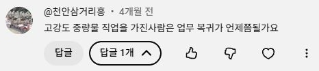
촬영 포인트 사무직과 육체노동의 차이, 단계별 업무 복귀 기준을 질문합니다.
고강도 중량물 직업을 가진사람은 업무 복귀가 언제쯤될가요
@천안삼거리흥 · 4개월 전
유선형 체형 여유증 환자 ㅣ 여유증 수술 리뷰
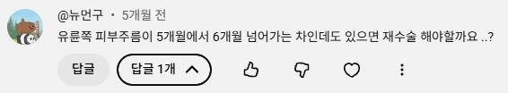
촬영 포인트 교정 수술을 판단하는 시기와 모양·흉터 평가 기준을 묻습니다.
유륜쪽 피부주름이 5개월에서 6개월 넘어가는 차인데도 있으면 재수술 해야할까요 ..?
@뉴먼구 · 5개월 전
어디서도 알려주지 않는 여유증수술 부작용
검색 결과가 없습니다. 검색어나 주제를 바꿔주세요.


댓글 이미지 만들기
직접 입력한 편집용 이미지 · 아래 실제 캡처와 별도로 저장됩니다.
내용을 입력하면 바로 미리보기에 반영됩니다. PNG는 2배 해상도로 저장됩니다.